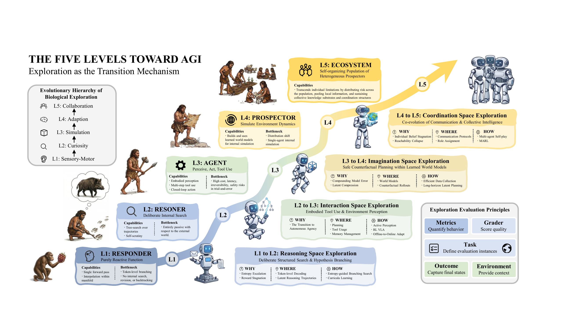
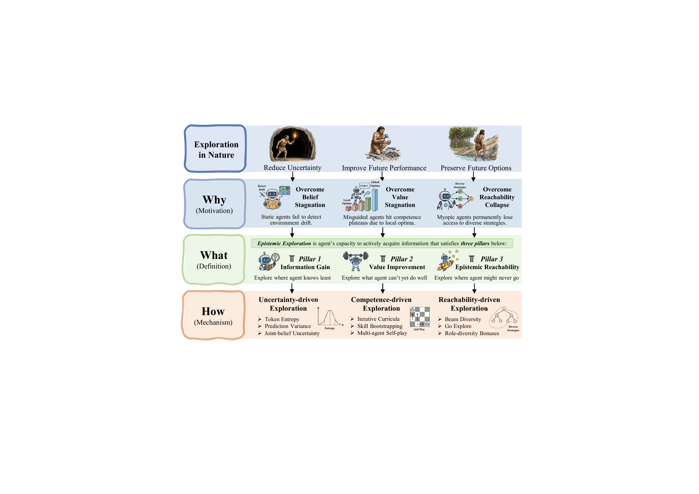
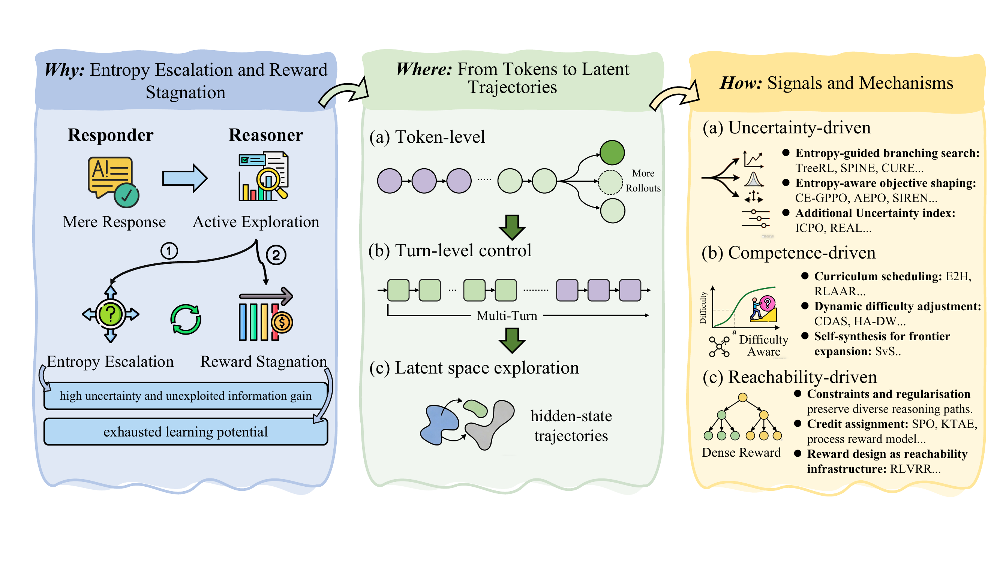
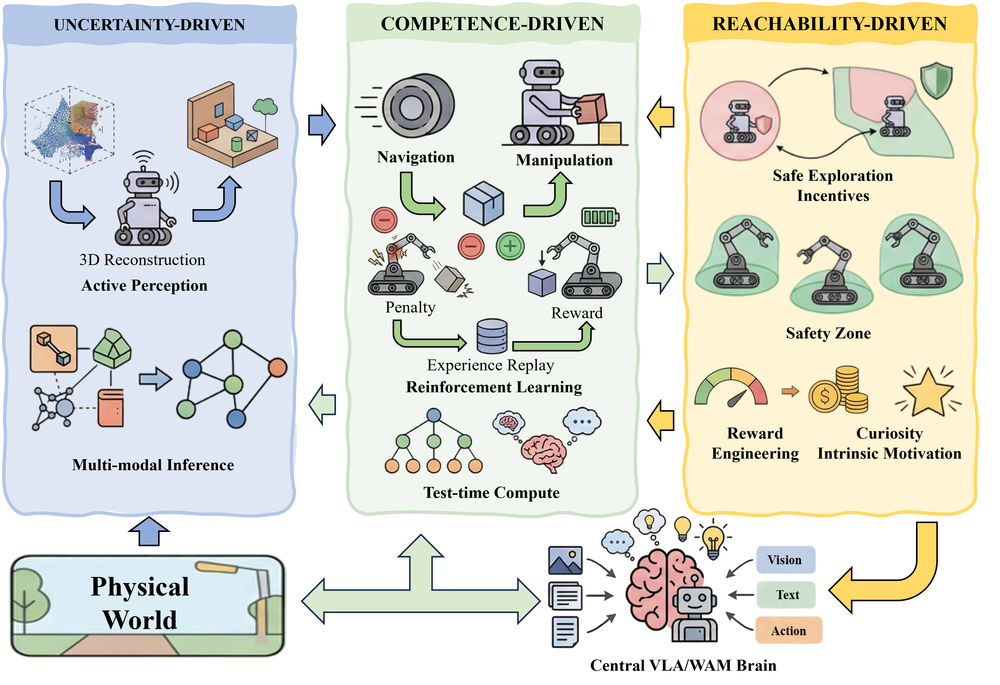
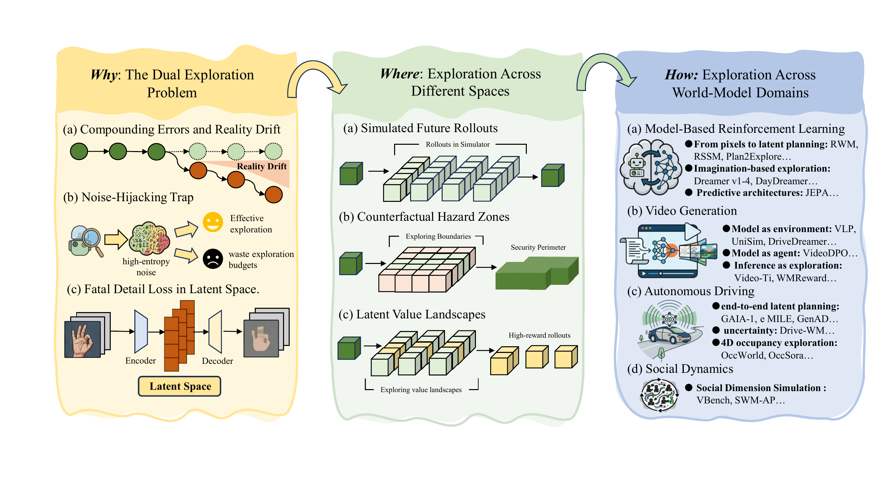
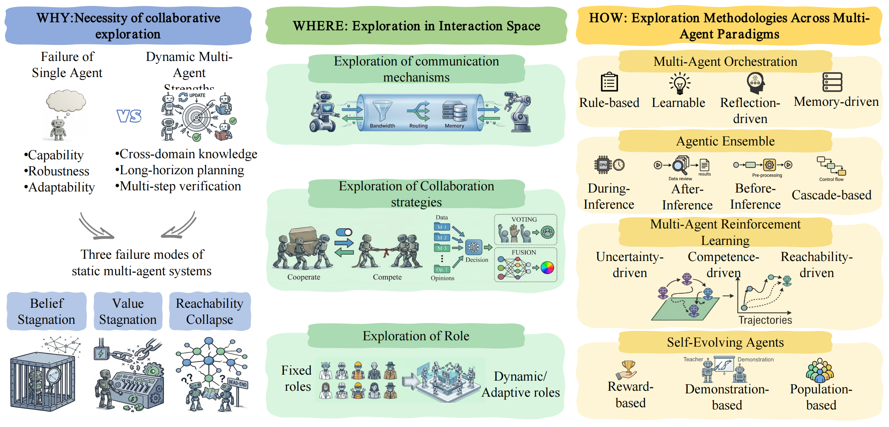

Exploration as the Transition Mechanism

The Five-Level Trajectory Toward AGI. Exploration serves as the transition mechanism across five levels of increasing agent sophistication: Responder → Reasoner (reasoning space), Reasoner → Agent (interaction space), Agent → Prospector (imagination space), and Prospector → Ecosystem (coordination space).
🔥 This is a curated paper list for the survey "Epistemic Exploration Toward Artificial General Intelligence", covering exploration mechanisms across reasoning, embodied AI, world models, and multi-agent systems.
🔥 Stay tuned for our full paper release, incorporating the latest developments.
[Always] We welcome all related papers! If you find any missed or new work, please open a Pull Request or contact us. We will keep this list updated frequently!
Epistemic exploration is the agent's capacity to actively acquire information that reduces its uncertainty about the world, convert that reduction into durable policy improvement, and keep future acquisition possible.
Unlike undirected exploration (e.g., ε-greedy), epistemic exploration is intentional, belief-driven, and multi-scale: the agent reasons about which actions are most informative and plans multi-step information-gathering strategies across reasoning trajectories, tool-use policies, embodied sensorimotor loops, world-model rollouts, and multi-agent coordination protocols.

Foundation of Epistemic Exploration — Why, What, and How.
We ground epistemic exploration in three jointly necessary criteria, each addressing a distinct failure mode of static optimisation:
Actively reduces epistemic uncertainty via belief-updating observations
Converts new information into durable policy improvement
Preserves positive visitation over belief-consistent regions
These form a closed loop: gain information → convert to value → keep the capacity to gain information alive → ...
The three criteria combine into a single constrained objective:
$$ \pi_{\mathfrak{A},t}^{*} \;=\; \underset{\underbrace{\pi_{\mathfrak{A}} \,\in\, \Pi_{\mathrm{reach}}(b_t)}_{\text{Reachability (C3)}}}{\arg\max}\; \underbrace{\mathbb{E}_{\theta \sim b_t} \Big[V^{\pi_{\mathfrak{A}}}_\theta(s_t, h_t)\Big]}_{\text{Value Improvement (C2)}} \;+\;\beta\;\cdot\; \underbrace{\mathbb{E}^{\pi_{\mathfrak{A}}}_{b_t} \left[\sum_{t'=t}^{\infty} \gamma^{\,t'-t}\,\mathcal{U}(s_{t'}, a_{t'};\, b_{t'})\right]}_{\text{Information Gain (C1)}} $$
where $\mathcal{U}(s, a;\, b) = I(\theta;\, s', r \mid s, a, b)$ is epistemic uncertainty, and $\Pi_{\mathrm{reach}}(b_t)$ is the reachability-feasible policy set.
Expected cumulative epistemic uncertainty the agent anticipates resolving along its trajectory.
Expected cumulative reward under current beliefs; what a pure exploiter would maximise.
Visitation must remain over every region plausibly relevant under beliefs, preventing short-term gains from foreclosing future learning.
We propose exploration as the transition mechanism between five levels of increasing agent sophistication. Each level introduces a qualitatively new exploration space that the previous level cannot access:
| Transition | Exploration Space | What Becomes Explorable |
|---|---|---|
| L1 → L2: Responder → Reasoner | Reasoning space | Hypotheses, alternative reasoning trajectories, latent thought representations; self-verification and revision |
| L2 → L3: Reasoner → Agent | Interaction space | Embodied perception, tool invocation, memory management, closed-loop action under partial observability |
| L3 → L4: Agent → Prospector | Imagination space | Counterfactual futures in learned world models; the dual exploration problem across real and imagined environments |
| L4 → L5: Prospector → Ecosystem | Coordination space | Communication topologies, co-evolving role specialisations, shared representations, collaborative strategies |
Our survey is organized as a 3×5 taxonomy crossing three signal-driven methodologies with the five levels:
| L1 Responder | L2 Reasoner | L3 Agent | L4 Prospector | L5 Ecosystem | |
|---|---|---|---|---|---|
| Uncertainty-Driven | —(single forward pass; no internal search) | Token / step entropy, entropy-guided branching | Active SLAM, prediction variance, pose uncertainty | Ensemble disagreement in latent world models | Inter-agent disagreement, joint-belief uncertainty |
| Competence-Driven | —(no learning loop at inference) | Difficulty-adaptive curricula, self-verification, self-play | Skill bootstrapping, goal-conditioned self-play | Imagination-based skill discovery, learning-progress curricula | Emergent multi-agent self-play, co-evolving curricula |
| Reachability-Driven | —(fixed output manifold) | Beam diversity, anti-repetition, KL-to-reference trust regions | Go-Explore, coverage-maximising curricula | Latent-space diversity bonuses, action-entropy regularisation | Role-diversity bonuses, anti-convergence on coordination topologies |
The transition from Responder to Reasoner requires exploration in reasoning space: branching over token sequences, reasoning trajectories, and latent thought representations. The agent must search for informative hypotheses rather than simply produce reactive outputs.

Levels 1–2 Reasoning-Space Exploration — Why (entropy escalation & reward stagnation), Where (tokens → turns → latent trajectories), and How (uncertainty / competence / reachability-driven).
Methods that prioritise exploration at high-uncertainty branching points in the reasoning process.
| Date | Method | Key Idea | Links |
|---|---|---|---|
| 2025-08 | CURE | Expands the training-state distribution at critical decision points to sustain exploration | arXiv GitHub |
| 2026-03 | SPINE | Preserves exploration by selectively updating high-entropy branch tokens | arXiv |
| 2025-06 | TreeRL | Explores reasoning via on-policy tree search from uncertain intermediate states | arXiv GitHub |
| 2025-09 | CE-GPPO | Collapses epistemic uncertainty into adaptive exploration bonuses for reasoning RL | arXiv |
| 2025-10 | STEER | Preserves exploration by stabilizing token-level entropy change through adaptive reweighting | arXiv |
| 2025-10 | AEPO | Adaptive entropy-guided policy optimization for exploration in reasoning models | arXiv GitHub |
| 2025-11 | ICPO | Promotes exploration by combining verifiable rewards with confidence-based preference advantages | arXiv |
| 2026-02 | REAL | Stabilizes exploration via balanced gradient allocation | arXiv |
Methods that match problem difficulty to the model's evolving competence frontier.
| Date | Method | Key Idea | Links |
|---|---|---|---|
| 2025-06 | E2H | Guides exploration through an easy-to-hard curriculum | arXiv GitHub |
| 2025-10 | RLAAR | Steers exploration through curriculum learning and rewarded abstention | arXiv |
| 2025-05 | CDAS | Explores the competence frontier by sampling problems matched to the model's current ability | arXiv GitHub |
| 2026-01 | HA-DW | Reduces exploration imbalance by debiasing group-relative advantages across prompt difficulty | arXiv |
| 2025-08 | SvS | Sustains exploration by self-synthesizing diverse but answer-equivalent problems during RLVR | arXiv GitHub |
Methods that prevent irreversible contraction of reasoning trajectory distributions.
| Date | Method | Key Idea | Links |
|---|---|---|---|
| 2025-10 | TROLL | Stabilizes exploration with principled trust-region updates instead of PPO-style clipping | arXiv |
| 2024-04 | ROPO | Preserves useful exploration by downweighting noisy preference signals instead of overfitting to them | arXiv |
| 2025-05 | KTAE | Explores better by assigning credit to key reasoning tokens rather than whole rollouts | arXiv GitHub |
| 2025-08 | VRPRM | Guides exploration with visual step-level rewards that encourage deeper reasoning paths | arXiv |
| 2026-01 | RLVRR | Turns sparse end rewards into a verifiable reward chain that supports broader open-ended exploration | arXiv GitHub |
At Level 3, the agent crosses from internal reasoning into situated interaction with external environments. Exploration unfolds in perception and action space, where every step incurs real cost. The transition splits into Digital Agents (software-mediated) and Embodied Agents (physical interaction).
Agents operating in software-mediated environments (web, APIs, code interpreters):
Methods that acquire information under partial observability by prioritising uncertain states, tool calls, or capability boundaries.
| Date | Method | Key Idea | Links |
|---|---|---|---|
| 2026-01 | JitRL | Uses count-based uncertainty bonuses to explore unseen state-action pairs | arXiv GitHub |
| 2023-05 | RAP | Explores alternative reasoning paths with MCTS and UCB guidance | Link GitHub |
| 2024-08 | Agent Q | Expands high-value action trajectories via MCTS-guided exploration | arXiv |
| 2023-10 | LAST | Explores reasoning-action branches through language-agent tree search | arXiv GitHub |
| 2025-04 | KnowSelf | Explores capability boundaries by detecting uncertain self-knowledge | arXiv GitHub |
| 2025-01 | Search-o1 | Explores external evidence when reasoning exposes knowledge uncertainty | Link GitHub |
| 2025-04 | TTRL | Test-time RL via majority-voted pseudo-rewards turns inference disagreement into exploration | arXiv |
Methods that tame combinatorial tool-use spaces through curricula, process-level credit assignment, and self-generated training tasks.
| Date | Method | Key Idea | Links |
|---|---|---|---|
| 2025-08 | PilotRL | Stages curricula to expand agent exploration from planning to tool use | arXiv |
| 2025-09 | ReSum-GRPO | Sustains long-horizon search exploration through context summarization | arXiv |
| 2024-03 | ETO | Optimizes exploratory trial-and-error trajectories for agent learning | arXiv GitHub |
| 2024-11 | WebRL | Self-evolving online curriculum from failure trajectories for web agents | arXiv |
| 2025-09 | Planner-R1 | Uses dense process rewards to steer exploration toward feasible plans | arXiv |
| 2025-08 | RLTR | Rewards complete tool-use processes to improve exploratory planning | arXiv |
| 2025-04 | ReTool | RL rewards strategic tool-invocation patterns, penalises redundant calls | arXiv |
| 2025-05 | GiGPO | Assigns state-level credit across grouped rollouts for exploration | arXiv GitHub |
| 2025-11 | Agent0-VL | Evolves tool-integrated exploration through repeated reasoning cycles | arXiv GitHub |
| 2025-05 | Absolute Zero | Uses proposer-solver self-play to explore new reasoning tasks | arXiv GitHub |
Methods that preserve behavioural flexibility by regulating entropy or injecting useful off-policy experience.
| Date | Method | Key Idea | Links |
|---|---|---|---|
| 2025-08 | EGPO | Adds entropy bonuses to encourage exploration in function-call reasoning | arXiv GitHub |
| 2025-09 | EPO | Regularizes entropy to sustain exploration in multi-turn agent RL | arXiv GitHub |
| 2025-09 | ENTROPO | Uses entropy-enhanced preferences to diversify coding-agent exploration | arXiv |
| 2026-03 | RAPO | Expands policy exploration with retrieval-augmented experience | arXiv |
| 2026-04 | E³-TIR | Branches from high-entropy prefixes to exploit exploratory experience | arXiv GitHub |

Level 3 Embodied Agent Exploration — Uncertainty-driven active perception, competence-driven navigation & RL & test-time compute, and reachability-driven reward engineering & constrained safety.
Embodied agents operate in continuous, high-dimensional action spaces where every physical interaction consumes time, energy, and mechanical wear. The three exploration paradigms adapt as follows:
Geometric & high-fidelity reconstruction: Viewpoint selection for active mapping, information-theoretic coverage, and ensemble-disagreement-based exploration of dynamics.
| Date | Method | Key Idea | Links |
|---|---|---|---|
| 2018-10 | MAX | Ensemble-disagreement drives active exploration of dynamics | arXiv GitHub |
| 2020-04 | Active Neural SLAM | Coverage-maximising hierarchical policies explore unknown occupancy maps | arXiv GitHub |
| 2021-03 | APT | Non-parametric entropy maximisation for unsupervised active pre-training | arXiv GitHub |
| 2023-12 | Model-Free Active Exploration | Information-theoretic lower-bound approximation for ensemble-based exploration | Link |
| 2024-10 | ActiveSplat | Gaussian-splat viewpoint exploration maximises reconstruction fidelity under a time budget | arXiv GitHub |
| 2023-11 | Conan | Active interactive exploration as Bayesian query to disambiguate latent scene state | arXiv GitHub |
| 2024-04 | ActiveRIR | Cross-modal audio-visual exploration for acoustic scene mapping (room impulse responses) | arXiv |
| 2025-10 | Active Semantic Perception | Entropy-driven exploration over LLM-sampled scene graph hypotheses | arXiv GitHub |
Semantic & multi-modal active inference: Probing the environment to disambiguate alternative scene-graph completions or to gather cross-modal (audio/language) evidence.
Competence-driven exploration spans navigation to task-relevant states and manipulation to achieve objectives. Both push beyond pre-trained priors at the frontier of current capability.
| Date | Method | Key Idea | Links |
|---|---|---|---|
| 2022-04 | SayCan | Affordance value-function reweights LLM-proposed action exploration | arXiv GitHub |
| 2022-07 | Inner Monologue | Closed-loop replanning via inner-speech feedback re-explores failed plans | arXiv |
| 2022-07 | LM-Nav | Goal-directed exploration over LLM-annotated topological graphs | arXiv GitHub |
| 2022-10 | VLMaps | Open-vocabulary visual-language maps guide language-conditioned spatial exploration | arXiv GitHub |
| 2023-10 | LFG | LLM semantic-priors prune frontier exploration toward goal-relevant regions | arXiv GitHub |
| 2024-10 | Fisher-Info Planning | MLLM-guided exploration balancing information gain vs. localisation risk (Fisher information) | arXiv GitHub |
| Date | Method | Key Idea | Links |
|---|---|---|---|
| 2023-03 | Cal-QL | Calibrated offline value exploration enabling safe online fine-tuning | arXiv |
| 2023-09 | Q-Transformer | Scales autoregressive value-based exploration to static multi-task trajectories | arXiv |
| 2024-09 | DPPO | Formulates denoising trajectories as auxiliary MDP for stable PPO on diffusion policies | arXiv GitHub |
| 2024-09 | FLaRe | Large-scale online RL fine-tuning exploration on pretrained VLAs | arXiv GitHub |
| 2024-10 | HIL-SERL | Sample-efficient on-robot RL with human-in-the-loop interventions for dexterous tasks | arXiv GitHub |
| 2024-11 | GRAPE | Preference-aligned exploration generalises VLA policies to novel scenarios | arXiv |
| 2025-02 | ConRFT | Consistency-regularised offline-to-online exploration (HIL-SERL + consistency) for diffusion VLA | arXiv GitHub |
| 2025-05 | ReinboT | RL amplifies VLA manipulation exploration via reward-guided offline alignment | arXiv GitHub |
| 2025-05 | VLA-RL | Scalable PPO-based online action-space exploration for VLA policies | arXiv GitHub |
| 2025-09 | SimpleVLA-RL | GRPO group-relative exploration scales VLA skill acquisition | arXiv GitHub |
| 2025-09 | Dual-Actor FT | Dual-actor decoupling of exploration vs. exploitation for stable offline-to-online RL | arXiv |
| 2025-10 | π_RL | First online PPO/GRPO RL fine-tuning for flow-matching VLA | arXiv |
| 2025-11 | SRPO | Self-refined exploration bridging static data and online rollouts | arXiv GitHub |
| 2025-11 | π*₀.₆ | Flow-matching VLA that learns from online experience via offline RL | arXiv |
| 2025-11 | WMPO | Pure world-model PPO enables safe online action-space exploration for VLA | arXiv |
| 2026-01 | SOP | Scalable online post-training infrastructure for fleet-scale VLA exploration | arXiv |
| 2026-02 | GigaBrain-0.5M | Foundation VLA learned directly from world-model-based RL at fleet scale | arXiv |
| 2026-04 | π₀.₇ | Steerable flow VLA trained with diverse multimodal context for out-of-the-box generalist skills | arXiv |
| Date | Method | Key Idea | Links |
|---|---|---|---|
| 2024-10 | V-GPS | Offline value guidance steers generalist AR / diffusion VLA decoding at test time | arXiv |
| 2025-05 | Hume | System-2 deliberative exploration via continuous flow value guidance | arXiv GitHub |
| 2025-08 | MB-Search VLA | Model-based MCTS over AR / Diffusion VLA imagines trajectories before acting | arXiv |
| 2025-09 | VLA-Reasoner | MCTS imagination-time exploration over autoregressive action trajectories | arXiv |
| 2025-11 | DeepThinkVLA | Slow-thinking test-time exploration through deliberate chain-of-action reasoning | arXiv GitHub |
| 2025-12 | TACO | Anti-exploration test-time steering via continuous normalising flows | arXiv GitHub |
| 2026-01 | TT-VLA | Value-free on-the-fly test-time RL adapts VLA policies per-episode | arXiv |
| 2026-02 | Recurrent-Depth VLA | Implicit test-time compute scaling via latent iterative reasoning (no explicit tokens) | arXiv |
Automated reward engineering & curiosity: LLM-driven reward synthesis and curiosity / curriculum mechanisms sustain broad exploration incentives.
| Date | Method | Key Idea | Links |
|---|---|---|---|
| 2018-10 | RND | Curiosity-driven exploration bonus via random network distillation | arXiv GitHub |
| 2020-02 | Never Give Up | Episodic + lifelong novelty bonuses sustain directed exploration across long horizons | arXiv |
| 2023-06 | Language-to-Rewards | LLM synthesises dense language-conditioned reward for skill exploration | arXiv GitHub |
| 2023-10 | Eureka | LLM-synthesised executable reward code evolves the explorable task manifold | arXiv GitHub |
| 2024-09 | CurricuLLM | LLM-designed curricula for progressive exploration of hard manipulation skills | arXiv GitHub |
| 2025-05 | TeViR | Text-to-video diffusion rewards enable efficient sparse-task exploration | arXiv |
| 2020-10 | Recovery RL | Learned recovery zones bound exploration without collapsing reachable set | arXiv GitHub |
| 2024-04 | RECOVER | Neuro-symbolic failure detection bounds exploratory trajectories in manipulation | arXiv |
| 2025-03 | SafeVLA | Constrained policy exploration under hard safety guarantees for VLA | arXiv GitHub |
The Prospector internalises a world model and faces a dual exploration problem: simultaneously gathering real data to refine world model fidelity AND searching imagined trajectories to extract policies.

Level 4 Imagination-Space Exploration — Why (the dual exploration problem), Where (simulated rollouts, hazard zones, latent value landscapes), and How (MBRL, video generation, autonomous driving, social dynamics).
World models act as recursive self-simulators where infinitesimal single-step errors compound exponentially over long imagined horizons. Agents must proactively probe epistemic boundaries.
| Date | Method | Key Idea | Links |
|---|---|---|---|
| 2023-01 | DreamerV3 | Explores long imagined rollouts with entropy-regularised actor to prevent premature convergence in sparse-reward settings | arXiv GitHub |
| 2019-06 | MBPO | Limits imagined rollout length to prevent compounding error accumulation; iterative policy–model alternation drives exploration of true dynamics | arXiv GitHub |
| 2018-05 | PETS | Ensemble of probabilistic networks quantifies epistemic uncertainty; explores regions where ensemble predictions most disagree to anchor model to reality | arXiv GitHub |
| 2018-07 | SLBO | Constructs return lower bound jointly optimised over policy and model; optimism under uncertainty encourages exploration of under-covered state–action regions | arXiv GitHub |
| 2018-07 | STEVE | Stochastic ensemble value expansion explicitly propagates epistemic uncertainty across multi-step imagined rollouts… | arXiv |
| 2025-12 | Long-Horizon MBRL | Identifies compounding error as the core bottleneck in offline long-horizon model-based RL… | arXiv GitHub |
| 2025-12 | Surprise-Robust WM | Trains world models to explicitly handle out-of-distribution "surprise" inputs; surprise-resilient training reduces catastrophic reality drift when imagination enters unexplored regions of state space | arXiv GitHub |
Curiosity-driven agents waste budgets on irreducible stochasticity (noisy-TV problem). Disentangling aleatoric from epistemic uncertainty via reachability metrics and learning-progress monitoring is essential.
| Date | Method | Key Idea | Links |
|---|---|---|---|
| 2020-05 | Plan2Explore | Maximises future ensemble disagreement in latent space for task-agnostic exploration; disagreement targets epistemic uncertainty, not irreducible noise | arXiv GitHub |
| 2020-06 | RIDES | Reward-weighted state-reachability intrinsic motivation separates reachable novel states from high-entropy irreducible noise | arXiv GitHub |
| 2018-08 | RND | Random network distillation as epistemic novelty signal; highlights persistent failure to distinguish aleatoric from epistemic uncertainty in stochastic envs | arXiv GitHub |
| 2017-05 | ICM | Curiosity via self-supervised inverse/forward dynamics; forward-model prediction error as intrinsic reward to explore informative state transitions | arXiv GitHub |
| 2025-09 | Beyond Noisy-TVs | Systematically categorises sources of stochastic noise in exploration environments… | arXiv GitHub |
| 2017-11 | Bayesian Uncertainties | Canonical treatment of aleatoric vs. epistemic uncertainty in deep networks… | arXiv |
| 2019-10 | Model-Based Active Exploration | Explicitly optimises for epistemic information gain rather than prediction novelty… | arXiv GitHub |
Aggressive compression of high-dimensional sensory streams loses safety-critical details. Physical stress-testing and structured latent representations force world models to encode functionally critical geometric realities.
| Date | Method | Key Idea | Links |
|---|---|---|---|
| 2019-02 | PlaNet | RSSM with deterministic + stochastic latent components; stochastic branch explores multiple plausible states rather than collapsing to a single deterministic prediction | arXiv GitHub |
| 2018-03 | World Models | V–M–C architecture compresses pixels to latent then explores futures via RNN-based mental simulation; highlights information loss from pure deterministic latents | arXiv GitHub |
| 2023-04 | I-JEPA | Image Joint-Embedding Predictive Architecture… | arXiv GitHub |
Agents generate imagined trajectories to discover effective behaviours before physical execution, exploiting computational parallelism — thousands of hypothetical scenarios per second.
| Date | Method | Key Idea | Links |
|---|---|---|---|
| 2025-09 | DreamerV4 | Shared world-model/policy backbone with phased training; first agent to obtain Minecraft diamonds from offline data via exhaustive imagined rollouts | arXiv |
| 2020-11 | MuZero | Learns latent dynamics supporting MCTS planning without pixel reconstruction; achieves superhuman performance by planning over imagined state sequences | arXiv GitHub |
| 2019-12 | DreamerV1 | RSSM-based latent world model; explores via action noise during environment interaction to broaden state-space coverage for model training | arXiv GitHub |
| 2020-10 | DreamerV2 | Discrete categorical latents + entropy-regularised actor; entropy bonus is explicit exploration regulariser preventing premature behavioural convergence | arXiv GitHub |
| 2019-03 | Atari 100k (SimPLe) | First video-prediction world model competitive with model-free RL at 100k environment steps; imagined rollouts from pixel-based world model enable sample-efficient exploration of Atari games | arXiv GitHub |
| 2026-01 | Ctrl-World | Controllable world model with structured latent decomposition… | OpenReview GitHub |
Safety-critical exploration probes operational failure boundaries before physical deployment; world models evaluate "what-if" counterfactuals without incurring real-world risk.
| Date | Method | Key Idea | Links |
|---|---|---|---|
| 2023-01 | DayDreamer | Transfers Dreamer latent-imagination to physical robots; explores counterfactual hardware interactions in latent space before committing to unsafe real actions | arXiv GitHub |
| 2018-05 | PETS | Probabilistic ensemble models epistemic uncertainty for planning; agents probe high-uncertainty regions to discover failure modes before physical execution | arXiv GitHub |
| 2024-10 | ActSafe | Active safe exploration via worst-case trajectory imagination; uses constrained world model rollouts to identify unsafe counterfactual outcomes before committing to any real action | arXiv GitHub |
| 2025-04 | BUMEx | Boundary-uncertainty model exploration: identifies safety-critical boundary regions in the world model's state space and actively probes them with imagined counterfactual rollouts to discover latent… | arXiv GitHub |
In sparse-reward settings, agents construct internal value landscapes through intrinsic motivation, turning world-model predictive errors into exploration bonuses.
| Date | Method | Key Idea | Links |
|---|---|---|---|
| 2020-05 | Plan2Explore | World model ensemble disagreement as intrinsic reward; constructs a latent value landscape rewarding states where model uncertainty is highest | arXiv GitHub |
| 2020-06 | RIDES | Reachability-weighted novelty bonus sculpts intrinsic value landscape to emphasise informative and accessible states | arXiv |
| 2018-10 | RND | Forward model prediction error on random network as novelty signal; constructs a pseudo-value landscape for count-free exploration in high-dimensional spaces | arXiv GitHub |
| 2017-05 | ICM | Self-supervised curiosity: forward-model error in latent feature space as exploration bonus, ignoring unpredictable environmental noise | arXiv GitHub |
| 2025-03 | Curiosity-Driven Imagination | Curiosity bonus directly inside the latent imagination loop: world model generates diverse hypothetical futures and rewards the agent for imagining states with high latent novelty, sculpting an… | arXiv GitHub |
| 2025-10 | General Exploratory Bonus | Unified framework for count-free exploration bonuses in latent space… | arXiv GitHub |
| 2026-01 | SuS (Surprise-based Successor) | Surprise-modulated successor representations for exploration… | arXiv GitHub |
Latent spaces must be action-grounded "Embodied-Native" manifolds — every imagined future tightly coupled with executable motor commands.
| Date | Method | Key Idea | Links |
|---|---|---|---|
| 2025-06 | V-JEPA 2 | Video-pretrained JEPA model enabling zero-shot robotic grasping; explores action-grounded latent manifold via abstract representation rather than pixel reconstruction | arXiv GitHub |
| 2025-06 | WorldVLA | Unified autoregressive framework for text, image, and action generation; joint latent manifold treats physical actions and visual evolution as first-class citizens | arXiv GitHub |
| 2024-04 | V-JEPA | First pure-video self-supervised JEPA; latent prediction of masked spatiotemporal blocks produces rich action-predictive representations without pixel reconstruction | arXiv GitHub |
| 2019-02 | PlaNet | RSSM latent manifold for planning; stochastic + deterministic components allow exploration over multiple plausible physical futures simultaneously | arXiv GitHub |
| 2025-01 | AD-L-JEPA | Autonomous driving latent-space JEPA: predicts action-conditioned future representations of driving scenes… | arXiv GitHub |
| Date | Method | Key Idea | Links |
|---|---|---|---|
| 2019-06 | MBPO | Short imagined rollouts prevent compounding error; iterative model–policy alternation guides exploration toward regions of true dynamics not yet covered | arXiv GitHub |
| 2018-07 | SLBO | Jointly maximises return lower bound over policy and model; optimism in model optimisation encourages exploration of state–action regions not yet well covered | arXiv GitHub |
| 2019-03 | SimPLe | Sequential policy optimisation in latent model: pixel-based video prediction model supports model-free policy gradient exploration… | arXiv GitHub |
| Date | Method | Key Idea | Links |
|---|---|---|---|
| 2018-05 | PETS | Probabilistic ensemble explicitly disentangles aleatoric vs. epistemic uncertainty via KL minimisation between ensemble members; explores where epistemic uncertainty is highest | arXiv GitHub |
| 2018-10 | ME-TRPO | Model-ensemble trust-region policy optimisation: uses N independently trained models and limits policy updates to regions where all models agree, preventing exploitation of epistemic uncertainty in… | arXiv GitHub |
| 2019-10 | Model-Based Active Exploration (MAX) | Treats exploration as active learning: at each step selects actions that maximally reduce epistemic uncertainty under the ensemble… | arXiv GitHub |
| Date | Method | Key Idea | Links |
|---|---|---|---|
| 2020-05 | Plan2Explore | Novelty = future ensemble disagreement in RSSM latent space; task-agnostic exploration pre-trains a world model before any reward signal is available | arXiv GitHub |
| 2019-02 | PlaNet | Pioneers RSSM: deterministic hidden state + stochastic Gaussian latent; stochastic branch forces imagination to explore multiple plausible environmental outcomes | arXiv GitHub |
| 2018-03 | World Models | V–M–C architecture: VAE compresses pixels, RNN explores temporal structure in latent space, controller acts within learned representation | arXiv GitHub |
| Date | Method | Key Idea | Links |
|---|---|---|---|
| 2025-09 | DreamerV4 | Phased training (WM pre-train → policy post-train) solves dual exploration problem; policy leverages WM priors for efficient exploration of long-horizon imagined trajectories | arXiv |
| 2023-01 | DreamerV3 | Percentile return normalisation stabilises exploration intensity across sparse and dense reward scales; adapts entropy regularisation automatically | arXiv GitHub |
| 2020-10 | DreamerV2 | Discrete categorical latents + actor entropy bonus as explicit exploration regulariser; prevents premature policy collapse in imagined rollouts | arXiv GitHub |
| 2019-12 | DreamerV1 | RSSM world model with action noise for environment exploration; broader state-space coverage improves quality of imagined training data | arXiv GitHub |
| 2023-01 | DayDreamer | Transfers DreamerV2 to physical robots; latent imagination enables efficient hardware exploration without prohibitive real-world sample requirements | arXiv GitHub |
| Date | Method | Key Idea | Links |
|---|---|---|---|
| 2025-06 | V-JEPA 2 | Video-pretrained world model enabling zero-shot robotic deployment; latent-space exploration closes the loop between imagination and physical execution | arXiv GitHub |
| 2024-04 | V-JEPA | First pure-video JEPA: predicts masked spatiotemporal block representations; abstract latent prediction explores rich spatiotemporal structure without pixel-level noise | arXiv GitHub |
| 2023-06 | I-JEPA | Image JEPA: learns representations by predicting abstract features of masked image regions from context… | arXiv GitHub |
Model as Environment: Video generation models serve as physics engines, enabling RL agents to explore within generated "dreams" at zero physical cost.
| Date | Method | Key Idea | Links |
|---|---|---|---|
| 2024-05 | Genie | Learns action-conditioned state transitions from unlabelled video; creates controllable virtual sandboxes for agent exploration without real-world interaction | arXiv |
| 2024-03 | UniSim | Universal simulator of sensorimotor interactions; trains RL agents entirely in simulated video environments for safe long-tail exploration | arXiv |
| 2024-01 | DriveDreamer | Driving-domain video world model conditioned on structured HD-map and traffic annotations… | arXiv GitHub |
| 2024-11 | Genie 2 | Scalable interactive environment generator: produces persistent 3D-consistent game worlds from a single image prompt… | arXiv |
| 2024-04 | Video Language Planning | Combines video generation with language-conditioned planning: generates goal-directed video plans as imagined futures, then executes them via a learned policy… | arXiv GitHub |
| Date | Method | Key Idea | Links |
|---|---|---|---|
| 2025-01 | Cosmos Policy | Injects latent frames for video–action co-diffusion; RL reward guides generation to explore physically consistent action-conditioned futures | arXiv |
| 2025-01 | VideoDPO | DPO applied to video generation; preference data forces generative exploration toward spatiotemporally consistent physical trajectories | arXiv GitHub |
| 2026-01 | TAGRPO | Token-level advantage-guided reward policy optimisation for video generation… | arXiv GitHub |
| 2026-02 | DreamZero | Zero-shot world model policy: directly uses a pre-trained video world model as a policy by selecting action sequences that steer imagined futures toward high-reward outcomes… | arXiv GitHub |
| Date | Method | Key Idea | Links |
|---|---|---|---|
| 2025-01 | Video-T1 | Test-time scaling for video generation: generates multiple candidate trajectories, uses verifiers to select the most physically consistent — inference as tree search | arXiv GitHub |
| 2026-01 | WMReward (Inference-Time) | Uses world model value estimates as verifier rewards at inference time… | arXiv GitHub |
| 2026-02 | DreamZero (Inference) | Leverages a frozen video world model at inference time to score action proposals via forward imagination… | arXiv GitHub |
| Date | Method | Key Idea | Links |
|---|---|---|---|
| 2026-03 | FastWAM | Decouples video generation from policy inference; skips test-time future imagination entirely to achieve 190ms latency for real-time closed-loop action exploration | arXiv GitHub |
| 2025-06 | WorldVLA | Unified autoregressive framework generating text, images, and actions; explores action-grounded latent manifold as joint first-class representation | arXiv GitHub |
| 2025-01 | Cosmos Policy | Latent frame injection synchronises video and action co-diffusion; closed-loop counterfactual simulation with RL-guided physically consistent exploration | arXiv |
| 2026-02 | DreamZero (WAM) | Zero-shot WAM that couples a frozen video world model with a learned action decoder; closed-loop action exploration via iterative world-model querying without any task-specific fine-tuning | arXiv GitHub |
| Date | Method | Key Idea | Links |
|---|---|---|---|
| 2024-01 | DriveDreamer | Driving world model synthesising future scenes conditioned on actions; explores diverse driving futures in latent space to validate plans before physical execution | arXiv GitHub |
| 2023-09 | GAIA-1 | Generative world model for autonomous driving; produces diverse imagined driving scenarios as a data engine for exploring rare safety-critical events | arXiv |
| 2022-10 | MILE | Model-based imitation learning in compact latent space; imagined rollouts in latent representation for sample-efficient exploration of driving behaviours | arXiv GitHub |
| 2024-12 | DrivingWorld | Spatiotemporal autoregressive world model for autonomous driving… | arXiv GitHub |
| 2025-06 | GenAD | Generalised autonomous driving world model: trains a single generative model across diverse driving datasets… | arXiv GitHub |
| 2024-03 | Think2Drive | Converts a pre-trained world model into an online planner… | arXiv GitHub |
| 2023-06 | UniAD | Unified autonomous driving framework integrating perception, prediction, and planning in a shared representation… | arXiv GitHub |
| Date | Method | Key Idea | Links |
|---|---|---|---|
| 2024-01 | Drive-WM | Action-conditioned multi-view video generation for driving; visualises consequences of hypothetical manoeuvres to explore safe counterfactual futures | arXiv GitHub |
| 2024-03 | RealGen | Adversarial retrieval-augmented generation targeting safety-critical scenario boundaries; probes failure-mode hazard zones via adversarial imagination exploration | arXiv GitHub |
| 2025-01 | AD-L-JEPA | Autonomous driving latent-space JEPA: predicts action-conditioned future driving representations… | arXiv GitHub |
| 2024-06 | Delphi | Dense latent point cloud world model for driving; probabilistic forecasting of future scene states enables uncertainty-aware exploration of counterfactual traffic evolutions | arXiv GitHub |
| 2025-01 | UncAD | Uncertainty-aware autonomous driving: estimates both epistemic and aleatoric uncertainty in world model predictions… | arXiv GitHub |
| Date | Method | Key Idea | Links |
|---|---|---|---|
| 2024-08 | OccSora | Diffusion-based 4D occupancy generation; synthesises long-horizon occupancy sequences enabling exploration of temporally consistent physical futures | arXiv GitHub |
| 2024-05 | OccWorld | Vision-centric 3D occupancy world model for driving; forecasts occupancy evolution providing collision-risk cost volumes for safe spatial exploration | arXiv GitHub |
| 2025-01 | Drive-OccWorld | Drives entirely in a 4D occupancy world: unified model for scene generation and ego-planning… | arXiv GitHub |
| 2024-04 | Copilot4D | Discretises 3D point cloud scenes into tokens and applies discrete diffusion for 4D world modelling… | arXiv |
| 2025-01 | DynamicCity | Dynamic 4D city generation via HexPlane-based occupancy world model; generates temporally consistent large-scale urban occupancy sequences enabling exploration of rare urban environment configurations | arXiv GitHub |
| 2025-04 | Gaussian World Model | 4D Gaussian splatting world model for autonomous driving… | arXiv GitHub |
| Date | Method | Key Idea | Links |
|---|---|---|---|
| 2024-10 | DriveArena | Creates reactive 4D worlds where the policy actively interacts with a neural simulator; enables closed-loop exploration of diverse reactive traffic scenarios | arXiv GitHub |
| 2024-09 | SimGen | Cascaded diffusion for high-fidelity, controllable scenario augmentation; addresses long-tail exploration by generating rare safety-critical scenarios on demand | arXiv GitHub |
| 2024-03 | DrivingDiffusion | Multi-view video diffusion for closed-loop driving simulation… | arXiv GitHub |
| 2025-05 | Raw2Drive | End-to-end closed-loop driving directly from raw sensor data… | arXiv GitHub |
| 2023-06 | TrafficBots | Multi-agent traffic simulation via conditional behaviour generation… | arXiv GitHub |
| 2025-04 | DrivingSphere | Spherical-projection world model for full 360° closed-loop driving simulation; complete spatial coverage removes blind spots so policies train against surrounding agents in all directions | arXiv GitHub |
| Date | Method | Key Idea | Links |
|---|---|---|---|
| 2024-01 | VBench | Comprehensive benchmark evaluating world model quality including social regularity capture; provides metrics to assess whether exploration produces socially plausible behaviours | arXiv GitHub |
| 2020-08 | Social-STGCNN | Spatio-temporal graph CNN models pedestrian trajectory social forces; world model for social dynamics enabling exploration of crowd interaction counterfactuals | arXiv GitHub |
| 2025-10 | LCTGen | Language-conditioned traffic generation: natural-language scene specs, structured map retrieval, and multi-agent rollouts for counterfactual social traffic exploration | arXiv GitHub |

Level 5 Coordination-Space Exploration — Why (single-agent limitations), Where (communication, collaboration, role, deployment), and How (orchestration, ensemble, MARL, self-evolving agents).
Methods that coordinate collaboration through pre-defined routing rules, role protocols, or structured workflows to guarantee deterministic reachability.
| Date | Method | Key Idea | Links |
|---|---|---|---|
| 2026-02 | ORCH | Explores many parallel analysis trajectories and merges them via a deterministic EMA-guided router to ensure reachable consensus in discrete-choice reasoning | arXiv |
| 2025-11 | MA-IR | Deterministic multi-agent orchestration for high-quality incident response decision support | arXiv |
| 2025-10 | MOSAIC | Task-intelligent orchestration routes specialised agents to explore scientific coding workflows within a rule-governed collaboration space | arXiv |
| 2025-06 | AgentOrchestra | Defines the reachable coordination space via a Tool-Environment-Agent (TEA) protocol, scaffolding scalable multi-agent exploration | arXiv |
| 2025 | Croto | Cross-team communication rules carve out a reachable space of inter-team collaboration for multi-agent exploration | - |
| 2024-06 | MACNET | Predefined topological links bound the agent interaction graph that large-scale multi-agent collaboration can traverse | arXiv |
| 2023-08 | MetaGPT | Encodes SOPs as meta-programming so role-based workflows follow reliably reachable collaboration trajectories | arXiv |
| 2023 | AgentVerse | Rule-driven collaboration scaffolds multi-agent exploration of emergent group behaviours within a reachable role space | OpenReview |
Methods that train orchestrators, meta-agents, or agent graphs to route tasks toward the most competent executors and expand multi-agent capability boundaries.
| Date | Method | Key Idea | Links |
|---|---|---|---|
| 2026-01 | MAS-Orchestra | Expands multi-agent reasoning competence through holistic orchestration, with controlled benchmarks probing the explored system space | arXiv |
| 2025-05 | Puppeteer-Puppet | Evolves a puppeteer that explores dynamic orchestration strategies over puppet agents to extend collaborative competence | arXiv |
| 2025-04 | W4S | Trains a weak meta-agent to explore task decompositions and harness strong executor agents beyond its own competence | arXiv |
| 2024-04 | CMAT | Collaboration tuning expands small-model agent competence by exploring multi-agent interaction signals | arXiv |
| 2024-02 | GPTSwarm | Treats language agents as optimizable computation graphs, enabling competence-driven search over prompts and inter-agent edges | arXiv |
Methods that adapt orchestration policies through reflection feedback or information-theoretic uncertainty signals across long-horizon multi-agent tasks.
| Date | Method | Key Idea | Links |
|---|---|---|---|
| 2025-09 | Orchestrator | Uses active inference to drive multi-agent exploration under epistemic uncertainty across long-horizon tasks | arXiv |
| 2025-04 | W4S | Weak meta-agent explores orchestration policies over strong executors, guided by reflection on uncertain outcomes | arXiv |
| 2025-03 | MAS-GPT | Trains LLMs to synthesise multi-agent systems per query, exploring the system-design space conditioned on task uncertainty | arXiv |
| 2024-04 | CMAT | Reflective multi-agent tuning explores feedback-driven collaboration to calibrate small-agent competence under uncertainty | arXiv |
Methods that build self-evolving multi-agent systems on shared memory or knowledge substrates to support long-horizon specialisation and exploration.
| Date | Method | Key Idea | Links |
|---|---|---|---|
| 2025-05 | PiFlow | Principle-aware orchestration grows a scientific knowledge substrate that guides multi-agent discovery exploration | arXiv GitHub |
| 2025-03 | MedAgentSim | Self-evolving clinical multi-agent simulation explores new cases by accumulating case-level memory as a shared substrate | arXiv GitHub |
| 2025 | SEMC | Self-evolving consultation grows a shared diagnostic knowledge base, expanding the reachable medical case space over time | - |
| 2025-02 | MobileSteward | Orchestrates app-oriented agents with self-evolving memory to explore cross-app instruction compositions | arXiv GitHub |
| 2025-01 | Mobile-Agent-E | Self-evolving mobile assistant explores complex tasks by accumulating reusable tips and shortcuts as a growing experience substrate | arXiv GitHub |
| 2023-04 | Generative Agents | Interactive simulacra use memory-retrieval substrates to explore and surface emergent social behaviour over long horizons | arXiv GitHub |
Methods that explore how to combine or choose token candidates from multiple LLMs at each decoding step.
| Date | Method | Key Idea | Links |
|---|---|---|---|
| 2025-10 | SAFE | Only ensembles at a few well-chosen token steps to keep decoding stable and fast | arXiv |
| 2025-10 | CoRe | Uses token and model agreement to downweight unreliable signals | arXiv |
| 2025-05 | Transformer Copilot | A Copilot learns from past token mistakes and fixes the Pilot’s logits | arXiv GitHub |
| 2025-02 | ABE | Makes different-vocabulary models agree on the same surface token before choosing it | arXiv GitHub |
| 2025-02 | CITER | Sends easy tokens to a small model and hard ones to a large model | arXiv GitHub |
| 2024-10 | UniTe | Ensembles only the union of top-*k* tokens instead of the full vocabulary | arXiv |
| 2024-06 | GaC | Treats next-token generation like classification and averages token probabilities | arXiv GitHub |
| 2024-04 | DeePEn | Maps different vocabularies into a shared space before merging token distributions | arXiv GitHub |
| 2024-04 | PackLLM | Gives more weight to models that fit the prompt better | arXiv GitHub |
| 2024-04 | EVA | Learns vocabulary mappings so different models can ensemble token by token | arXiv GitHub |
| 2024-02 | - | Uses a benign small model to pull token probabilities away from harmful outputs | arXiv |
| Date | Method | Key Idea | Links |
|---|---|---|---|
| 2025-06 | RLAE | Adjusts model weights on the fly as generation goes on | arXiv |
| 2024-12 | SpecFuse | Lets models draft short spans, then picks the best one for the next step | arXiv |
| 2025-02 | Speculative Ensemble | Lets one model draft a span and others verify it for faster decoding | arXiv GitHub |
| 2024-09 | SweetSpan | Lets each model write a short span, then uses mutual scoring to choose one | arXiv |
| 2024-07 | Cool-Fusion | Waits for a shared word boundary, then selects the best whole span | arXiv |
| Date | Method | Key Idea | Links |
|---|---|---|---|
| 2025-11 | CBS | Explores many next reasoning steps, then keeps the ones backed by collective consensus | Link |
| 2024-12 | LE-MCTS | Searches over next reasoning steps and keeps the path with the best process reward | arXiv |
Methods that explore how to compare multiple complete responses after generation, either by selecting the single best answer or by choosing a strong subset for regeneration.
| Date | Method | Key Idea | Links |
|---|---|---|---|
| 2025-12 | LLM-PeerReview | Lets LLM judges score candidate answers and picks the best-reviewed one | arXiv GitHub |
| 2025-10 | LLMartini | Aligns answer parts so users can compare and compose a final response | arXiv |
| 2025-10 | Beyond Consensus | Uses minority veto to stop overly agreeable judges from accepting bad answers | arXiv GitHub |
| 2025-10 | OW/ISP | Uses who agrees with whom, not just vote counts | arXiv |
| 2025-09 | FLAME | Aggregates line-level annotations from several LLMs to rank bug locations | arXiv GitHub |
| 2025-09 | CARGO | Uses confidence-aware scoring to decide which model to trust more | arXiv |
| 2025-07 | LENS | Learns how much to trust each answer from internal states | arXiv |
| 2025-05 | EL4NER | Merges small-LLM NER outputs and self-checks the final spans | arXiv |
| 2025-03 | Symbolic-MoE | Selects skill-matched experts and then combines their finished reasonings | arXiv GitHub |
| 2025-01 | DFPE | Keeps diverse strong models, filters weak ones, and reweights the rest | arXiv GitHub |
| 2025-01 | DMoA | Balances diversity and consistency before mixing answers | OpenReview |
| 2024-12 | Smoothie | Picks the answer most supported by the others, without labels | arXiv GitHub |
| 2024-10 | LLM-Forest | Uses weighted voting across graph-guided prompt variants | arXiv GitHub |
| 2024-10 | LLM-TOPLA | Selects a diverse top-*k* set before regeneration | arXiv GitHub |
| 2024-10 | MLKF | Fuses complementary reasoning from multiple LLMs into one answer | Link GitHub |
| 2024-08 | URG | Learns ranking and regeneration together | Link |
| 2024-02 | Agent-Forest | Samples many answers and keeps the one most supported by voting | arXiv GitHub |
| 2023-06 | LLM-Blender | Ranks answers first, then fuses the best few into one | arXiv GitHub |
| 2023-05 | MoRE | Uses agreement among reasoning experts to choose an answer or abstain | arXiv GitHub |
Methods that route each query by predicting discrete model utility—such as whether a model is likely to be good enough, or which model is better under the query.
| Date | Method | Key Idea | Links |
|---|---|---|---|
| 2025-10 | DiSRouter | Lets models help decide which peer should answer | arXiv |
| 2025-06 | TagRouter | Matches queries to model tags instead of training a heavy router | arXiv |
| 2025-06 | Router-R1 | Learns multi-round routing to choose and combine models better | arXiv GitHub |
| 2025-06 | RadialRouter | Builds a structured query view for more robust routing | arXiv |
| 2025-05 | RTR | Chooses both the model and the reasoning style | arXiv GitHub |
| 2024-12 | Bench-CoE | Routes queries using benchmark-based model strengths | arXiv GitHub |
| 2024-10 | GraphRouter | Uses graph structure to choose the best model | arXiv GitHub |
| 2024-09 | Eagle | Compares candidate models without extra router training | arXiv |
| 2024-08 | SelectLLM | Scores each query and picks an efficient model | arXiv |
| 2024-06 | RouteLLM | Learns when a cheaper model can replace a stronger one | arXiv GitHub |
| 2024-05 | LLM Routing Lessons | Shows which prompt cues help choose the right model | arXiv GitHub |
| 2024-04 | Hybrid-LLM | Balances answer quality and cost before choosing a model | arXiv GitHub |
| 2024-03 | ETR | Routes expert tokens to the most suitable specialist model | arXiv GitHub |
| 2024-01 | Routoo | Learns to send each query to the model most likely to work | arXiv |
| 2024 | RouterDC | Learns query embeddings that make routing easier | Link GitHub |
| 2023-11 | ZOOTER | Uses reward signals to pick the right expert model | arXiv |
| 2023-08 | FORC | Chooses the cheapest model that is still good enough | arXiv GitHub |
| 2023 | Benchmark Routing | Builds routing rules from benchmark-level model performance | OpenReview |
| Date | Method | Key Idea | Links |
|---|---|---|---|
| 2025-10 | WebRouter | Compresses web-agent prompts and routes with cost in mind | arXiv |
| 2025-10 | LLMRank | Uses rich query features to rank which model should answer | arXiv |
| 2025-05 | Avengers | Combines small models by routing queries to their strengths | arXiv GitHub |
| 2025-05 | InferenceDynamics | Profiles model skills and knowledge before routing | arXiv |
| 2025-05 | kNN Router | Uses nearest past queries instead of a complex learned router | arXiv |
| 2025 | RELM | Learns recommendation and evaluation together for model selection | OpenReview |
| 2025-02 | LLM Bandit | Explores cheap options first and learns cost-aware routing online | arXiv |
| 2024-12 | PickLLM | Uses RL to pick the best model from context and budget cues | arXiv |
| 2024-08 | TO-Router | Predicts utility under latency and cost constraints | arXiv |
| 2024-07 | MetaLLM | Wraps several models and picks one using predicted utility | arXiv GitHub |
| 2024-06 | HomoRouter | Routes queries among similar tools with fine-grained scoring | arXiv |
| 2024-01 | Blending | Blends model strengths as a cheaper alternative to one giant model | arXiv |
Methods that cascade models in sequence—each model handles a subset of the query or task, passing intermediate outputs to the next model in the pipeline.
| Date | Method | Key Idea | Links |
|---|---|---|---|
| 2025-12 | RoBoN | Routes best-of-n samples across multiple LLMs, exploring which model adds the highest next-response gain via reward and agreement signals | arXiv GitHub |
| 2025-09 | Semantic Agreement | Uses meaning-level agreement between model outputs to explore whether a query can stop at a smaller model or should defer upward | arXiv |
| 2025-04 | EMAFusion | Combines taxonomy routing, learned routing, and confidence-triggered escalation to explore the cheapest reliable model path for each query | arXiv |
| 2025-04 | ModelSwitch | Uses sample consistency to explore when repeated sampling should stay with the current model or switch to a complementary one | arXiv GitHub |
| 2024-12 | DER | Treats expert selection as sequential route exploration, choosing the next LLM to add complementary knowledge with minimal compute | arXiv |
| 2024-10 | Cascade Routing | Unifies routing and cascading to explore the model chain only when quality estimates suggest extra capacity will pay off | arXiv GitHub |
| 2024-04 | LM Cascades | Uses token-level uncertainty to explore whether a generative response is reliable enough to stop or should be deferred to a larger model | arXiv |
| 2023-10 | AutoMix | Uses self-verification and POMDP routing to explore whether a weaker model is sufficient or a larger model is needed | arXiv GitHub |
| 2023-10 | Neural Caching | Uses active selection to explore which queries a continuously distilled student can absorb and which should still go to the teacher | arXiv GitHub |
| 2023-10 | MoT Cascade | Uses weak-model answer consistency, enriched with CoT/PoT thought mixtures, to explore whether escalation is necessary | arXiv GitHub |
| 2023-10 | EcoAssistant | Explores a hierarchy of assistants, refining with execution feedback and backing off to stronger models only when needed | arXiv GitHub |
| 2023-05 | FrugalGPT | Explores budget-aware combinations of LLMs, adaptively choosing a query-specific cascade for cost-efficient accuracy | arXiv |
| 2023-01 | Confidence Deferral | Clarifies when confidence-only deferral can explore the cascade effectively and when downstream-aware signals are required | Link |
| 2022-10 | Model Cascading | Explores early exit across models of increasing capacity, reserving large-model compute for harder inputs | arXiv |
| Date | Method | Key Idea | Links |
|---|---|---|---|
| 2025-12 | SDAX | Treats unsupervised skill discovery as high-level exploration and bi-level tunes diversity-vs-task rewards to learn agile locomotion behaviors | arXiv |
| 2025-09 | CERMIC | Calibrates curiosity with inferred peer-intention context to filter noisy novelty and reward high information-gain transitions in sparse-reward MARL | arXiv GitHub |
| 2025-02 | TEE | Maximizes cross-agent trajectory entropy in a contrastive latent space via particle-based estimation, yielding intrinsic rewards for diverse coordinated exploration | arXiv |
| 2025-02 | Consensus-Diversity Tradeoff | Shows implicit consensus with partial disagreement can preserve exploration diversity and improve robustness in dynamic multi-agent settings | arXiv GitHub |
| 2023-02 | EMAX | Uses per-agent value ensembles for UCB-guided exploration, low-variance ensemble targets, and majority-vote action selection to reduce miscoordination | arXiv |
| 2022-08 | MACE | Combines collaborative voxel mapping, global goal assignment, and time-aware safe-corridor planning for collision-safe multi-robot exploration of unknown spaces | arXiv |
| 2021-12 | MASAC | Proposes a CTDE multi-agent soft actor-critic front-end for collaborative waypoint search, coupled with minimal-snap trajectory optimization for executable robot motion | arXiv |
| 2021-11 | EMC | Uses prediction errors of induced individual Q-values as coordinated intrinsic rewards, plus episodic memory to reinforce informative experiences | arXiv GitHub |
| 2021-07 | CMAE | Selects shared exploration goals from entropy-scored projected state spaces and trains agents to reach them in a coordinated way | arXiv GitHub |
| 2019-10 | MAVEN | Introduces latent-variable hierarchical control to induce temporally committed exploration modes while retaining value-decomposition scalability | arXiv GitHub |
| 2019-10 | EITI/EDTI | Encourages coordinated exploration by maximizing inter-agent influence, using mutual information (EITI) and value-of-interaction rewards (EDTI) | arXiv GitHub |
| 2017-05 | ICM | Defines curiosity as forward-model prediction error in inverse-dynamics features, promoting exploration without relying on extrinsic rewards | arXiv GitHub |
Methods that enable agents to evolve their own capabilities, roles, or knowledge representations through exploration and self-modification.
| Date | Method | Key Idea | Links |
|---|---|---|---|
| 2025-11 | AgentEvolver | Self-evolves an LLM agent through self-questioning, self-navigating, and self-attributing modules so it generates its own tasks, trajectories, and credit signals for autonomous capability growth | arXiv GitHub |
| 2025-05 | SPA-RL | Decomposes a long-horizon agent's final reward into per-step progress contributions, providing dense intermediate rewards that stabilise RL on sparse-reward tasks | arXiv GitHub |
| 2025-05 | GiGPO | Adds an inner step-level group baseline on top of trajectory-level GRPO, enabling fine-grained credit assignment for multi-turn LLM agent training | arXiv GitHub |
| 2025-05 | SRSI | LLM acts as its own judge to score self-generated solutions and uses these self-rewards as RL signal, bootstrapping improvement without external labels | arXiv |
| 2025-03 | DAPO | Open-source large-scale LLM RL recipe introducing clip-higher, dynamic sampling, token-level policy-gradient loss, and overlong-reward shaping for stable scaling | arXiv GitHub |
| 2025-02 | SiriuS | Builds an experience library of successful multi-agent reasoning trajectories—augmented by re-trying and rewriting failed ones—and fine-tunes the agents on it for self-improvement | arXiv GitHub |
| 2024-11 | WebRL | Self-evolving online curriculum turns failed web tasks into new training instructions, paired with an outcome-supervised reward model and KL-constrained policy updates | arXiv GitHub |
| 2024-06 | TextGrad | Treats LLM-generated natural-language critiques as textual "gradients" and back-propagates them through compound AI systems to optimise prompts, code, and components end-to-end | arXiv GitHub |
| 2024-06 | DigiRL | Two-stage offline-then-online autonomous RL with a VLM-based evaluator and an advantage-filtered curriculum to train robust Android device-control agents in the wild | arXiv GitHub |
| 2024-03 | Quiet-STaR | Generalises STaR by sampling internal rationales at every token position and reinforcing the ones that improve next-token prediction, teaching LMs to "think" silently before speaking | arXiv GitHub |
| 2024-02 | GRPO | Removes PPO's value network by using group-sampled rollouts to compute the baseline, enabling memory-efficient on-policy RL for LLMs (introduced in DeepSeekMath) | arXiv GitHub |
| 2024-01 | SRLM | LLM acts as its own judge via LLM-as-a-Judge prompting, generates preference pairs on its own outputs, and iteratively DPO-trains on them—removing the human reward bottleneck | arXiv |
| 2023-10 | SELF | Iterative self-evolution loop where the model self-critiques and self-refines its outputs in natural-language feedback, then fine-tunes on the improved data | arXiv |
| 2023-05 | DPO | Re-parameterises RLHF so the LM itself implicitly defines the reward, reducing alignment to a simple classification loss on preference pairs—no separate reward model or RL loop needed | arXiv GitHub |
| 2023-04 | RRHF | Aligns LLMs to human preferences by sampling multiple candidate responses and applying a ranking loss based on their reward order, sidestepping the complexity of PPO | arXiv GitHub |
| 2023-03 | Self-Refine | Same LLM iteratively produces feedback on its own output and refines it across rounds, improving quality at inference time without any extra training or external supervision | arXiv GitHub |
| 2023-03 | Reflexion | Agent verbalises why a trial failed, stores the reflection in episodic memory, and uses it to guide subsequent trials—"verbal" reinforcement learning without weight updates | arXiv GitHub |
| 2022-03 | STaR | Generates rationales for problems, rationalises wrong answers given the correct one, and iteratively fine-tunes on rationales that yield correct answers, bootstrapping reasoning ability | arXiv GitHub |
Exploration is not a primitive observable but an inferential claim about how an agent handles uncertainty, learning, and future choice. An adequate evaluation must separate exploratory behaviour from mere activity, benefit from base competence, and open-ended search from premature convergence.
The agent actively reduces uncertainty through directed information-seeking.
The agent converts acquired information into improved competence.
The agent preserves access to plausible future states, actions, and hypotheses.
| Date | Benchmark | Key Idea | Links |
|---|---|---|---|
| Reasoning-Space Evaluation | |||
| 2024-11 | FrontierMath | Exposes the pass@1-to-pass@k gap at capability frontiers, measuring whether reasoning search reaches answers beyond one-shot competence | arXiv |
| 2024-02 | OlympiadBench | Probes whether extended reasoning chains resolve genuine uncertainty at olympiad-level difficulty | GitHub |
| 2024-03 | LiveCodeBench | Adds executable feedback to reasoning evaluation, making self-correction gain directly measurable | GitHub |
| Interaction-Space Evaluation | |||
| 2024-03 | WorkArena | Reveals whether the controller reopens exploration when web-based interfaces change across knowledge-work scenarios | GitHub |
| 2024-04 | OSWorld | Tests whether multimodal agents reopen search and adapt action policies when open-ended computer tasks shift tool demands | GitHub |
| Imagination-Space Evaluation | |||
| 2022-06 | MineDojo | Evaluates whether embodied agents leverage internal simulation to reduce real interaction cost in open-ended environments | GitHub |
| 2022-06 | PlanBench | Isolates planning-layer failures by testing whether agents reason coherently about action and change | GitHub |
| Coordination-Space Evaluation | |||
| 2019-02 | SMAC | Tests whether decentralised agents reduce joint uncertainty through tactical coordination | GitHub |
| 2023-10 | Sotopia | Assesses whether social interaction reduces joint uncertainty rather than producing superficial verbal agreement | GitHub |
Scalable exploration for reasoning beyond verifiable tasks remains an open problem.
Ensuring exploration safety within predictive world action models.
Causal and counterfactual reasoning in imagination space.
Coordination-space exploration without combinatorial explosion.